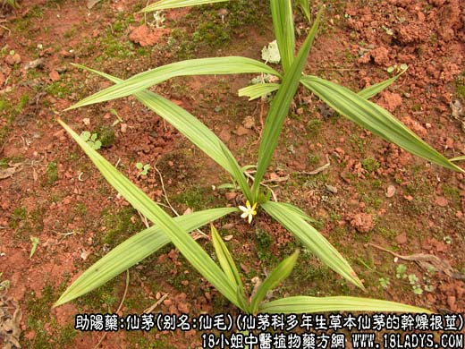
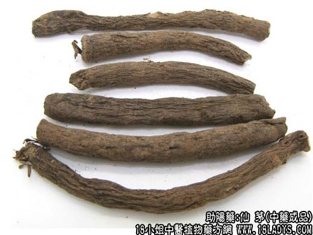
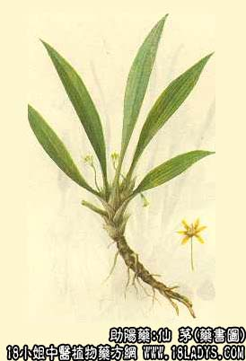

仙茅为少常用中药，始载《开宝本草》。
别名：仙毛。
来源：为仙茅科多年生草本植物仙茅的干燥根茎。野生活栽培。
产地：主产于四川、广西、云南等地。江南各地多有分布。
性状鉴别：本品呈圆柱形，略弯曲，长3～10厘米，直径0.4～1厘米。表面棕褐色，显粗糙，皱缩不平，并散生不甚明显的小圆点状皮孔及须根残痕。质坚硬，条长者易折断，断面略平坦，淡褐色，呈角质状（因经过蒸煮淀粉糊化），放大镜下观察，显颗粒状呈半透明体。气微，味微辛苦。嚼之产生粘液。
以根茎粗长均匀，表面棕褐色，内碴淡褐色，角质坚实为佳。
主要成分：含树脂、鞣质等，有效成分未详。
药理作用：温补肾阳，强壮筋骨。
性味：辛、温。有小毒。
归经：入肝、肾经。
功能：补肾阳，强筋骨，散寒湿。
主治：阳痿精冷，腰膝冷痛，风湿关节炎，慢性肾炎，遗精、小便失禁，心腹冷气等症。
临床应用：治肾阳虚所致的腰膝酸软以及风寒湿痹，适应证基本上与淫羊藿同，但毒性之猛烈则超过之。近年来较多用于配淫羊藿治疗高血压病，方如二仙汤（本仙茅本身几乎无降压作用）。
使用注意：本品由于辛温有毒，不宜当作补药长服。凡阴虚火盛，或有热证、鼻衄者不宜服。中毒症状为舌肿胀，可用大黄、元明粉水煎服，或用三黄汤解之。
用量：3～9g。
处方举例：二仙汤：仙茅12g，仙灵脾12g，当归9g，巴戟天9g，黄柏9g，知母9g，水煎服。
注：本品来源说法尚不一致，有些书籍列为石蒜科植物仙茅的干燥根茎。